Существует базовый набор средств по уходу за абсолютно любыми волосами, который должен быть у каждой девушки независимо от какой-то конкретной проблемы.
Что это за средства:
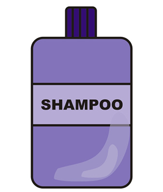 Шампунь подбирается исключительно по типу кожи головы, так как шампунь средство для очищения кожи головы и его выбор не зависит от того на сколько у вас сухие или жирные волосы по длине, подходящий вам шампунь должен хорошо очищать и при этом не сушить кожу головы.
Кожа головы бывает сухой, нормальной и жирной.
-Такие шампуни нужно немного по другому использовать, так как они плохо пенятся, нужно лить в ладошку гораздо больше шампуня, чем сульфатного, также лучше немного выдержать его на волосах(1-2мин) и только потом смывать.
- Вы можете использовать безсульфатный шампунь на постоянной основе, однако я все же рекомендую периодически использовать сульфатный, чтобы хорошо очистить волосы, а также использовать шампунь глубокого очищения для того чтобы смыть силиконы и другие вещества которые копятся в волосах от использования стайлингов, спреев, бальзамов и масок, они итак плохо смываются сульфатными, а безсульфатными их совсем не смыть.
Сульфаты это поверхностно активные вещества (ПАВы), которые являются основным действующим веществом в составе шампуня.
Сульфаты это минералы серной кислоты которые при взаимодействии с водой активно пенятся, а именно пена и способствует очищению кожи головы и корней волос от жира и грязи.
Сульфаты бывают разные, есть более агрессивные, есть более мягкие. Чаще всего все производители используют одни и те же ПАВы, в сульфатных шампунях комбинация из Sodium Laureth Sulfate и Cocamidopropyl Betaine, а в безсульфатных - Cocamidopropyl Betaine и Cocamide DEA.
Если вам не подходят сульфатные шампуни, вполне возможно у вас реакция на какой-то определенный сульфат, возможно стоит поискать просто шампунь с более мягкими сульфатами, поищите в составе на втором месте Magnesium Laureth Sulfate или Sodium Coco Sulfate вместо Sodium Lauryl Sulfate (SLS) и Sodium Laureth Sulfate (SLES).
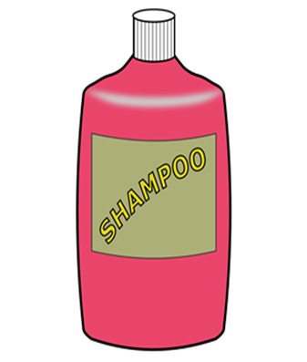 Такой шампунь нужен для того чтобы очистить длину волос от силиконов, грязи, жира, веществ которые обычным шампунем не смываются и накапливаются от использования бальзамов, масок, стайлинговых средств и т.д. Если длину волос не очищать то они будут слипаться в сосульки, перестанут быть рассыпчатыми, также перепитанные волосы всегда лишины блеска, а маски или другие уходовые средства перестают работать.
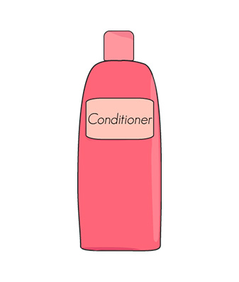 Использовать бальзамы и кондиционеры нужно каждый раз после мытья. Отличие бальзамов от кондиционеров и ополаскивателей в том что бальзамы содержат больше уходовых средств для увлажнения и питания, ополаскиватели и кондиционеры более легкие и обволакивают поверхность волос облегчая расчесывания. Сегодня производители чаще всего совмещают все эти средства в одном. Данные средства нужны для поддержания волос в хорошем состоянии между масками, а также для облегчения расчесывания.
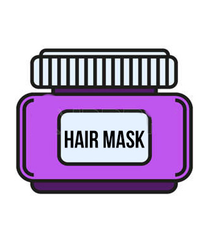 Именно влага делает волосы упругими и эластичными. Волосы постоянно подвергаются высушиванию, даже не используя горячие укладки они все равно испаряют влагу из-за батарей зимой, летом от жары на солнце, из-за сухого воздуха и без дополнительного увлажнения волосы быстро высохнут, а значит начнут пушится, ломаться, сечься и так далее. Поэтому даже для здоровых волос уход обязательно должен включать увлажняющие маски для профилактики сухости
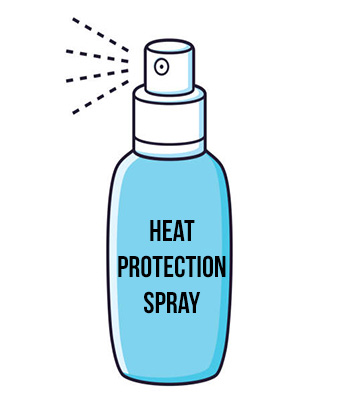 Если волосы подвергаются горячему воздействию. Сушатся феном, завиваются на плойку, выпрямляются утюжком, то обязательно наносите термозащитное средство, силиконы в составе этих средств создают защитную пленку, которая не дает чрезмерно испаряться влаге из волос, что защищает их от сухости.
Лично я рекомендую соблюдать порядок нанесения средств для того чтобы они работали максимально эффективно.
В таком порядке стоит использовать уход для волос:
1. Шампунь.
2. Смываемый уход (бальзам, маска)
3. Несмываемый уход (спреи, масла, флюиды)
4. Укладочные средства (крема, пенки, гели)
5. Термозащитное средство
6. Завершающие укладку средства (масла, воски, лаки)
1. Первый этап ухода конечно же очищение, для того чтобы подготовить волосы к дальнейшему уходу.
2. Далее очищенные волосы нужно обязательно напитать или увлажнить.
3. Начиная с этого пункта, использование средств по необходимости, в зависимости от проблемы. Несмываемый уход дает дополнительное увлажнение, питание, блеск, антистатик, облегчение расчесывания, защиту от uv.
4. Укладочные средства помогают волосам держать нужную форму после укладки.
5. А теперь самое важное, все средства начиная с третьего пункта, если они необходимы, нужно наносить на влажные волосы, помыли, отжали полотенцем и сразу наносим, не ждите пока волосы хотя бы чуть-чуть подсохнут. Волосы должны быть хорошо отжатые, но при этом равномерно влажные, тогда вы сможете максимально равномерно распределить средство по волосам, а также так проще не переборщить с нанесением.
Термозащиту всегда нужно наносить после всех средств, подождав пару минут, чтобы те впитались, так как уход или укладочные средства должны проникнуть в волосы или в кутикулу, термозащита же содержит силиконы которые создают пленку, именно эта пленка не дает пересушивать волосы, но она же не будет давать проникнуть уходу в волосы. Если вы не используете фен, а ждете пока волосы высохнут сами, а потом используете утюжок или плойку, то все равно наносите термозащиту на влажные волосы, а потом ждите пока они сами высохнут.
6. После укладок, уже на сухие волосы для того чтобы убрать торчуны, придать доп. блеск, зафиксировать укладку, можно использовать воски, масла, спреи флюиды для блеска и лак.
✅ Уход и укладка могут быть 2 в 1.
✅ Укладка и термозащита могут быть 2 в 1. Да, лучше конечно все-таки отдельно, но такие средства 2 в 1 нормально работают и вместе.
✅ Средства которые могут использоваться как смываемый и несмываемый уход 2 в 1.
✅ Несмываемый уход и финиш, укладка и финиш иногда могут быть одним и тем же средством, просто использоваться в разном порядке в зависимости от предназначения. Например масло можно наносить как уход и как финиш. Лак можно использовать как укладка и как финиш, средства защиты от уф могут быть использованы как несмываемый уход и как финиш (так как его постоянно нужно обновлять на солнце).
❌ Уход и термозащита. Уходу все-таки лучше сначала проникнуть в волосы, а потом уже термозащитой все запечатать.
❌ Шампунь и бальзам 2 в 1. Такие средства и не очищают и не ухаживают. Иногда даже слишком питательные шампуни могут плохо очищать, что уж говорить о таких средствах. Сначала должно быть очищение, потом уже весь уход.
❌ Средства у которых больше 2-х функций. Которые и уход и укладка и термозащита и финиш и так далее. В принципе я не рекомендую использовать на волосы все средства ухода сразу, так как это просто не нужно, это быстро перепитывает волосы, а также от слишком большого количества средств волосы не будут выглядеть опрятными и чистыми.
Средства которые же содержат кучу компонентов по факту содержат один питательный компонент, один увлажняющий, один для фиксации, вообщем это такая каша, где всего мало и вместе еще и не работает. К примеру хорошее увлажняющее средство должно содержать не один компонент, а минимум пять и увлажняющих и влагоудерживающих, которые именно в связке будут хорошо делать свою работу.
Поэтому я всегда рекомендую брать только тот уход который вам нужен в данный момент, определитесь с проблемой и поймите что нужно для ее решения, не стоит брать средство которое преподносят как решение всех проблем. Как правило они не решают ни одной.
Под каждую функцию у девушки должна быть отдельная расческа.
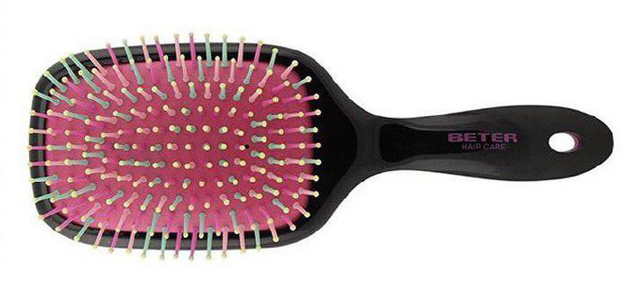
1. Широкая, прямоугольная расческа для обычного расчесывания дома каждый день.
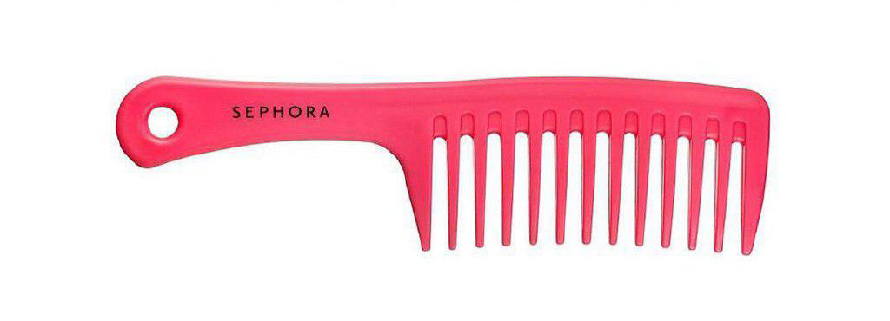
2. Гребень с широкими зубьями для того чтобы помогать распутывать влажные волосы.
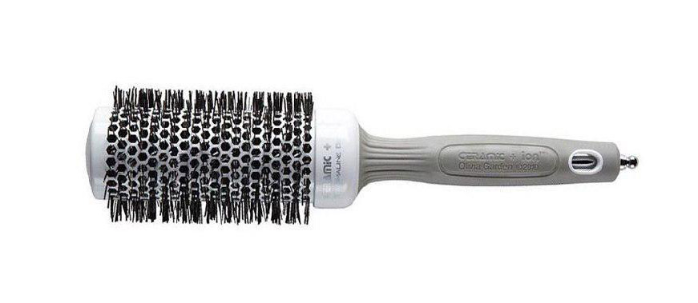
3. Если волосы укладываются феном то как минимум один брашинг.
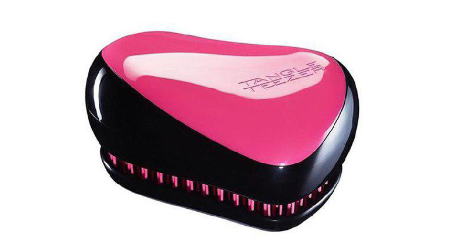
4. Маленькая складная расческа с собой в сумочку.
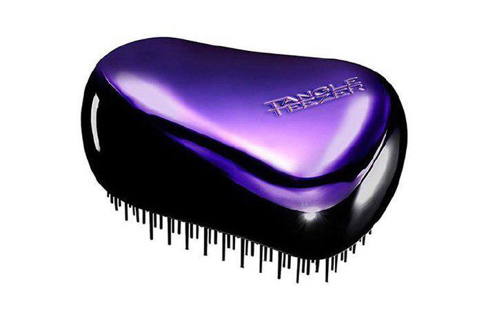
5. Для распутывания волос можно иметь силиконовую расческу с разной длиной зубьев (типа тангл тизер).
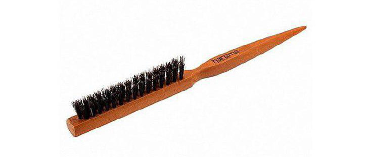
6. Если у вас постоянно нет объема, то можно иметь расческу для начеса из натурального ворса и после укладки у корней делать легенький начес, это не вредит волосам, но придает объем, также такой расческой можно приглаживать торчуны, сбрызнув на нее лак или укладочное средство, еще она помогает разглаживать “петухи” на волосах если вы делаете часто хвосты. Такой расческой пользуются мастера при создании причесок.
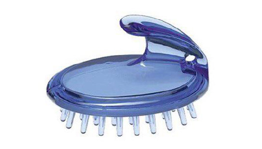
7. Расческа для шампунирования, для того чтобы равномерно распределять маску на волосах. Такую расческу тоже используют в основном в салонах, хотя стоит она копейки, также кто-то любит ее за массаж головы в душе.
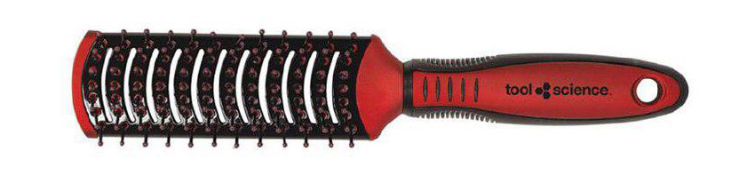
8. Плоский термобрашинг, такой расческой тоже пользуются в основном мастера, ей создается объем у коротких волос (примерно до плеч ей хорошо работать), ей довольно не просто оперировать и нужен навык и тренировка чтобы хорошо получалось, но если у вас короткие волосы и вы хотите делать прикорневой объем, то можете попробовать научится ей работать.
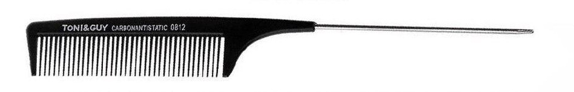
9. Плоская расческа с узким концом для пробора, такую расческу парикмахеры используют при создании причесок, ей хорошо делать проборы и убирать "петухи" при зачесывании волос в хвост, честно скажу что даже я ей почти никогда не пользовалась, хотя ездила делать свадебные прически.
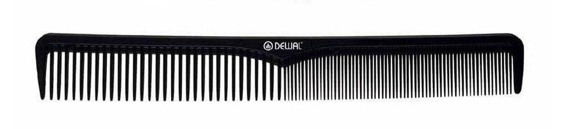
10. Плоская расческа с частыми зубьями, это основной инструмент парикмахера при стрижке, думаю что дома вам такая может понадобится только если вы собираетесь кого-то подстричь.
Любые волосы расчесывать лучше по необходимости. Если вы спокойно ходите два дня до следующего мытья не расчесываясь, а разбирая волосы руками, то это отлично. Кудрявые же волосы стоит расчесывать один раз перед мытьем головы, в остальное время разбирать локоны руками, чтобы они не пушились. Волосы нельзя расчесывать мокрыми, но можно расчесывать влажными и подсохшими, поэтому подождите пока волосы чуть подсохнут, нанесите средство чтобы пряди лучше скользили и аккуратно расчешите гребнем с редкими зубьями, либо разберите волосы руками, затем когда волосы еще чуть подсохнут, можно их расчесать обычной массажной расческой.